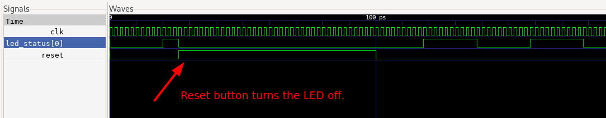

January 7, 2023
Note: The simulator code is heavily inspired by two posts on
itsembedded.com {1,
2}.
Here’s the (system)verilog file:
test.sv
module test(input clk, input reset);
// constants
parameter THRESHOLD = 10 - 1;
// variables
enum bit[0:0] {OFF, ON} led_status = OFF;
integer unsigned counter = 0;
always @(posedge clk or posedge reset) begin
$display ("LED status is %d counter is %d", led_status, counter);
if (reset == 1) begin
led_status <= OFF;
counter <= 0;
end else begin
if (counter == THRESHOLD) begin
led_status <= led_status.next();
counter <= 0;
end else begin
counter <= counter + 1;
end
end
end
endmoduleAnd our test bench c++ file:
sim_test.cpp
#include <stdlib.h>
#include <iostream>
#include <verilated.h>
#include <verilated_vcd_c.h>
#include "Vtest.h"
// Change MAX_SIM_TIME to the number of clock cycles you want. If set to 100,
// it means the clock will be 50 times on 1 and 50 times on 0.
#define MAX_SIM_TIME 1000
vluint64_t sim_time = 0;
int main(int argc, char** argv, char** env) {
// dut = DEVICE UNDER TEST (points to the verilog module).
Vtest *dut = new Vtest;
Verilated::traceEverOn(true);
// Instantiate a tracer so that we can visualise it later.
VerilatedVcdC *m_trace = new VerilatedVcdC;
// 5 represents the depth of the dut.
dut->trace(m_trace, 5);
m_trace->open("waveform.vcd");
while (sim_time < MAX_SIM_TIME) {
dut->reset = 0;
if (sim_time > 25 && sim_time < 100) {
// for a few cycles, pretend the reset button is on.
dut->reset = 1;
}
// switch the clock from 0 to 1.
dut->clk ^= 1;
// evaluates the design.
dut->eval();
// stores the trace.
m_trace->dump(sim_time);
sim_time++;
}
m_trace->close();
delete dut;
exit(EXIT_SUCCESS);
}To compile the traces run:
verilator --cc --trace --exe --build -j 0 -Wall sim_test.cpp test.sv && obj_dir/Vtestand to run the waves file:
gtkwave waveform.vcdThe wave looks like this, and proves the reset button behaviour: 